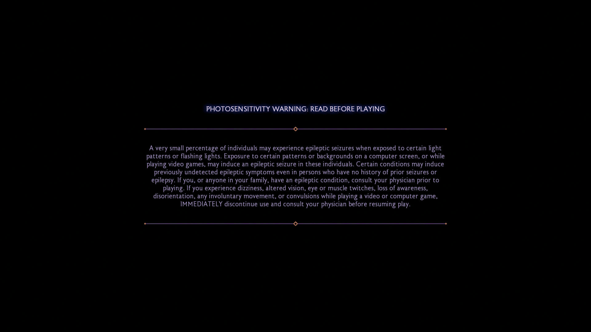

Go
Gophotosensitivity warnings and game development
february 26 2025 @ 5:25pm
it has been nearly a year since my last devlog, and i've moved its location twice since then. this will be my first post since making my blog fully independent of any third party platform or CMS, and once again today i bring you no devlog. what i do bring you, though, is some frustrated thoughts about something that affects my life in an intimate manner, the intersection of it with my biggest hobby, and what we can do about it as game developers.
let's start somewhere simple. if you're reading this, there's a very high chance you've played a video game! there's an even higher chance that you've played a AAA blockbuster, perhaps even on a console like a playstation or xbox. so, presuming that's the case, let me ask you something: have you ever noticed these warnings at the beginning of a game?
the photosensitivity warning at the beginning of dragon age: the veilguard
if you haven't noticed them, i don't blame you — you've likely skipped past them along with every logo and developer splash screen, EULA, and privacy notice you've ever been presented with. what might surprise you is that despite being photosensitive, i've skipped past them, too. to understand why, let's break down what photosensitivity is, how it affects people, and why it's a problem in video-games.
so what is photosensitivity? what we often refer to as photosensitivity is perhaps better classified as two distinct conditions: photosensitive epilepsy, and photophobia. while the exact triggers of these conditions will vary from person to person, what they tend to have in common is that flickering or strobing lights in varying degrees of severity can cause a medical event, be it a seizure, a migraine, vertigo, nausea, something else, or any combination of the above, depending on the condition or person. some of these things, particularly seizures, can be life-threatening in certain circumstances.